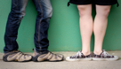
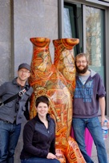

Welcome
You’ve stumbled across Steph Burg’s homepage. I’m a software developer at Microsoft living in Seattle, WA. I’m also getting my masters degree in computer science and engineering from the professional masters program at the University of Washington. You may know me by my maiden name Steph Arndt.
I volunteer across Seattle with various organizations. I’m an active member in the Junior League of Seattle, an organization of women committed to promoting voluntarism, developing the potential of women and improving the community through the effective action and leadership of trained volunteers. I help run arts and crafts classes for the children at the Seattle Children’s Home. I’m also a lead teacher for Teaching Kids Programming which partners with IGNITE to encourage middle and high school girls to get excited about STEM careers.
I graduated in December, 2009 from the University of Wisconsin in Madison, WI with bachelors degrees in computer science and molecular biology. While there, I was heavily involved with a song and dance troupe called the Wisconsin Singers. We toured around the states as ambassadors to the UW. I played trumpet in it for three school years from 2006-2009. I also played trumpet for 3 years with the UW Jazz Orchestra under the direction of Jim Doherty.
I played Eb cornet with the First Brigade Band, a civil war reenactment band out of Watertown, WI from 2002-2008. Because of my ties to 1BB, I also played trumpet in FUMC’s Blessed Brass and Bb cornet in the Madison Brass Band throughout college. I played with the Rainier Symphony based out of Tukwila, WA during the 2011 concert season.
I am married to Brian Burg. We met in Seattle as software development interns at Amazon.com. After graduating I moved down to Lafayette, IN and worked at Purdue University in a biochemistry lab as a lab technician until Brian graduated in May of 2010. Our wedding was May 22, 2011.

Snippets of My Life
